Inside look at modern web browser
Google Chrome 团队2018年写的一系列文章，解释现代浏览器（Chrome）在我们浏览网页的时候，内部发生些什么事情。
1. Part 1
Inside look at modern web browser (part 1) - Chrome Developers
几种进程以及各自做的事情：
Process and What it controls
- Browser: Controls "chrome" part of the application including address bar, bookmarks, back and forward buttons. Also handles the invisible, privileged parts of a web browser such as network requests and file access.
- Renderer: Controls anything inside of the tab where a website is displayed.
- Plugin: Controls any plugins used by the website, for example, flash.
- GPU: Handles GPU tasks in isolation from other processes. It is separated into different process because GPUs handles requests from multiple apps and draw them in the same surface.
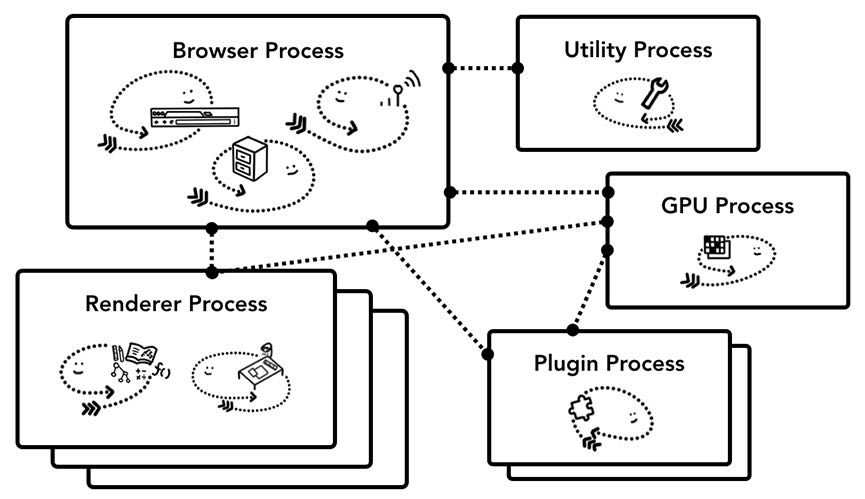
内存不够的时候会将相同站点的多页面跑在一个进程中(通常是一个tab对应一个render process)
Because processes have their own private memory space, they often contain copies of common infrastructure (like V8 which is a Chrome's JavaScript engine). This means more memory usage as they can't be shared the way they would be if they were threads inside the same process. In order to save memory, Chrome puts a limit on how many processes it can spin up. The limit varies depending on how much memory and CPU power your device has, but when Chrome hits the limit, it starts to run multiple tabs from the same site in one process.
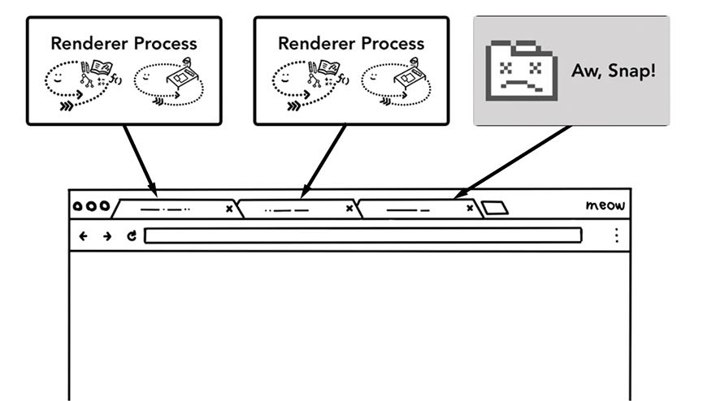
为了做到更加安全，之后Chrome重构将每个Frame都分配一个render process. 这个重构工作量很大，因为要兼容之前Per Tab的行为。
Enabling Site Isolation has been a multi-year engineering effort. Site Isolation isn’t as simple as assigning different renderer processes; it fundamentally changes the way iframes talk to each other. Opening devtools on a page with iframes running on different processes means devtools had to implement behind-the-scenes work to make it appear seamless. Even running a simple Ctrl+F to find a word in a page means searching across different renderer processes. You can see the reason why browser engineers talk about the release of Site Isolation as a major milestone!
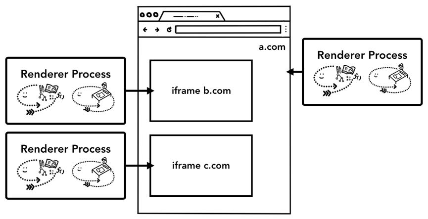
2. Part 2
Inside look at modern web browser (part 2) - Chrome Developers
Browser Process里面有几个Threads， 最重要是UI Thread和Network Thread. UI Thread负责来处理用户的输入以及外观展示等，而Network Thread则负责来读取网络数据。
The browser process has threads like the UI thread which draws buttons and input fields of the browser, the network thread which deals with network stack to receive data from the internet, the storage thread that controls access to the files and more. When you type a URL into the address bar, your input is handled by browser process’s UI thread.
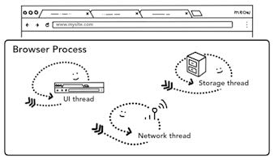
等Network Thread拿到数据之后，UI Thread就会去查找可用的Render Process. 这个过程可以和Network Thread是并行的，这样当网络数据Ready的时候就有可用的渲染进程可用。当然这种预测会失效，因为如果出现站点跳转的话，那么必须确保站点之间不共享渲染进程)
Since the network request could take several hundred milliseconds to get a response back, an optimization to speed up this process is applied. When the UI thread is sending a URL request to the network thread at step 2, it already knows which site they are navigating to. The UI thread tries to proactively find or start a renderer process in parallel to the network request. This way, if all goes as expected, a renderer process is already in standby position when the network thread received data. This standby process might not get used if the navigation redirects cross-site, in which case a different process might be needed.
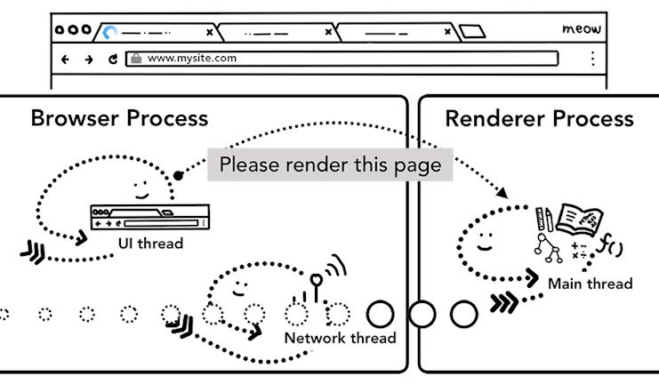
如果在一个Tab下面跳转到其他站点的话，某些站点还需要处理 `beforeunload` 这个事件，那么UI线程还需要通知Render Process处理这个事件。这个事件就是提示一下用户“你确定需要离开这个站点吗？”这样，好比Gmail站点下面如果你在操作邮件，而有些操作还在进行中，如果你此时离开站点就会有这个提示。而真正决定要跳转页面的时候，UI Thread也是重新寻找新的渲染进程，并且等待之前的渲染进程回收完成。
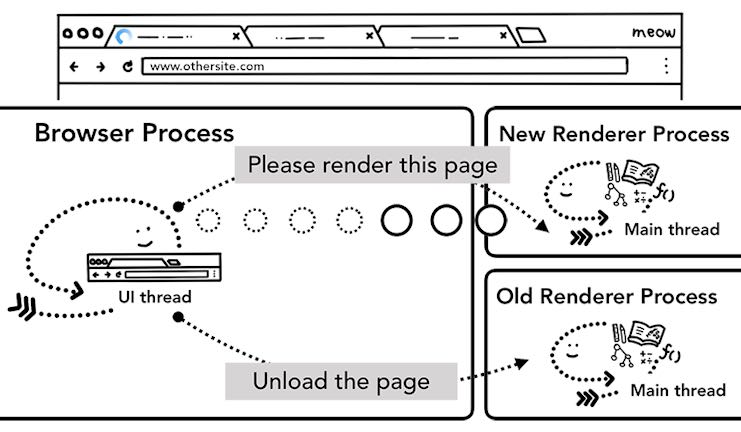
Chrome还有一类Service Worker(这个我不太懂，https://developer.chrome.com/docs/workbox/service-worker-overview/， 浏览器可以访问这个URL看到 chrome://serviceworker-internals) 我看大概的意思就是，Service Worker是一段JS代码，和某个URL关联起来。一旦用户访问这个URL的话，那么首先会去调用这个JS代码来处理，JS运行在渲染进程。说实话我没有太明白这个东西的作用，工作流程如下图所示。
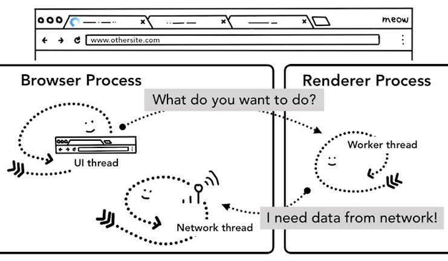
3. Part 3
Inside look at modern web browser (part 3) - Chrome Developers
渲染进程主要包含3个线程：Worker Thread, Compositor Thread和Raster Thread. Worker Thread主要用来进行计算和构建元素关系，以及运行JS，Compositor Thread将元素切分成为小片(tile)交给Raster Thread, Raster Thread则用来展示每个tile.
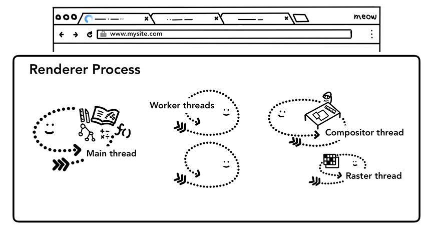
Worker Thread构建过程是：
- 从HTML创建DOM
- 根据DOM里面的指令做其他资源加载
- 计算每个元素的Style(Style Calculation)
- 计算每个元素的Layout
下图是计算每个元素的stye
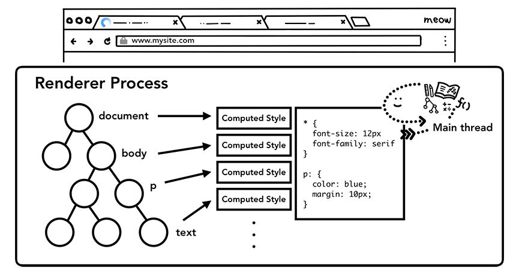
下图是根据style来计算layout. 这里有个难点是，现代网页都是交互式的，所以元素以及他们的style可能会动态变化，所以渲染进程还需要能够实时/增量地来更新这些元素的style/layout.

实时上渲染进程没有做任何“绘制”的事情，相反只是做了“计算”的事情。Worker Thread确定Layout Tree之后，就交给Compositor Thread来进行计算渲染。Compositor Thread将Layout切分成为多个tiles, 交给Raster Thread来处理，Raster Thread看上去主要工作就是create bitmap并且保存到GPU内存中。

每个交给GPU的tiles被成为Draw quads, 然后这些Draw Quads被打包成为Compositor frame, 由Compositor Thread交给Browser Process中的UI Thread，让他去决定如何展示。此时的数据结构应该就比较简单了，UI Thread不需要做太多的逻辑判断，数据内容也都是在GPU Memory中。
| 对象 | 作用 |
|---|---|
| Draw quads | Contains information such as the tile's location in memory and where in the page to draw the tile taking in consideration of the page compositing. |
| Compositor frame | A collection of draw quads that represents a frame of a page. |
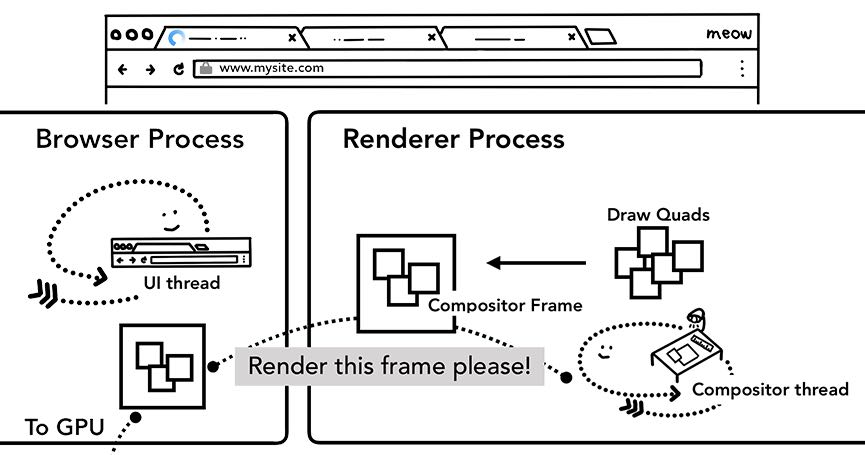
4. Part 4
Inside look at modern web browser (part 4) - Chrome Developers
渲染进程还需要处理来自于Browser Procsser的输入，浏览器进程将用户事件以及左表位置交给渲染进程，渲染进程根据x,y 找到对应的元素以及检查event handler来进行处理。
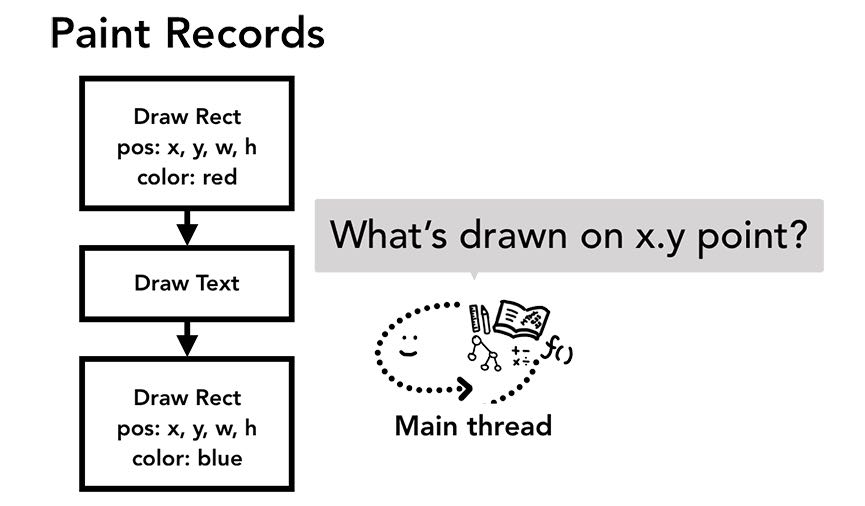
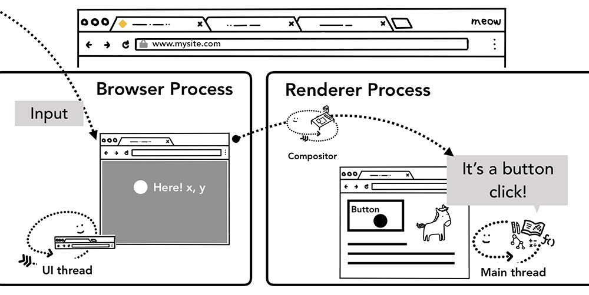
这样下来整个过程就复杂了：在渲染的时候还需要等待来自UI Thread的输入（IPC完成）。为了加快这个过程，渲染进程在绘制页面的时候，会将可能有用户交互的区域单独标记出来。这样在绘制的时候，对于没有用户交互的区域，就可以依然按照之前原先渲染逻辑进行。
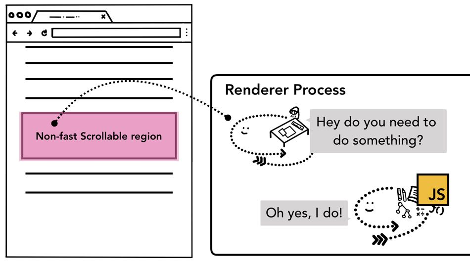
为了减少Main Thread(渲染进程)处理事件的频率，UI Thread会将events进行合并，合并某个时间内的所有相同事件，但是对于一些特定事件依然不会进行合并。
If a continuous event like touchmove was sent to the main thread 120 times a second, then it might trigger excessive amount of hit tests and JavaScript execution compared to how slow the screen can refresh.
To minimize excessive calls to the main thread, Chrome coalesces continuous events (such as wheel, mousewheel, mousemove, pointermove, touchmove ) and delays dispatching until right before the next requestAnimationFrame.
Any discrete events like keydown, keyup, mouseup, mousedown, touchstart, and touchend are dispatched immediately.